Today‘s handspinners have a handful of useful terms to describe and document their handspun
yarns. Twists per inch (TPI), angle of twist (AOT), and wraps per inch (WPI) are now fairly
well understood by all levels of handspinners. Although elasticity and resiliency are part
of the common lexicon, elasticity is only used in the general sense, and resiliency appears
rarely in descriptive terms about handspun yarns. Nevertheless, elasticity and resiliency
are important factors in determining and predicting the behaviour of the ultimate
application, namely knitted and woven garments. This study focuses on a quantitative
analysis of the elasticity and resiliency of yarns where the constituent fibres are
non-elastic blended with elastic fibres. Finally, the study presents a new quantitative
method of describing handspun yarns in combined terms of elasticity and resiliency:
liveliness.
Lay a 24” piece of test yarn over a ruler or yardstick.
Make sure the yarn is lengthened to remove any curves, but relaxed so as not to distort or
extend the fibers.
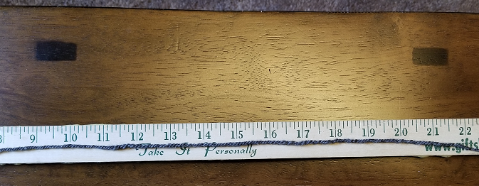
Fig. 1 - Relaxed yarn
With the thumb and forefinger of each hand pinch the yarn so that the test area is 10” in
length.
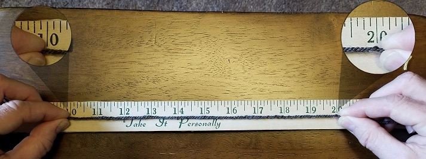
Fig. 2 - 10” test length
Stretch the length of yarn as far as it will stretch, but no further. This is the
elasticity or elastic length of the yarn. Percentage of the original length (10”).
This is the yield strength point of the stress/strain curve.
Fig. 3 - The elastic length is 12.25”
Take note of the length in decimal inches.
Hold the yarn for 1 min.
WITHOUT letting go of the yarn, move your hands together allowing the yarn to relax.
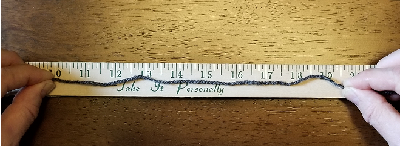
Fig. 4 - Yarn at rest for 1 min
Allow the yarn to relax for 1 min.
Stretch the yarn as in Step 2. The yarn should be straight, but relaxed. This is the
resiliency or resilient length of the yarn. Percentage of the elastic length recovered.
Fig. 5 - The resiliant length is 10.25”
Take note of the length in decimal inches.
Enter the elasticity and resiliency above.
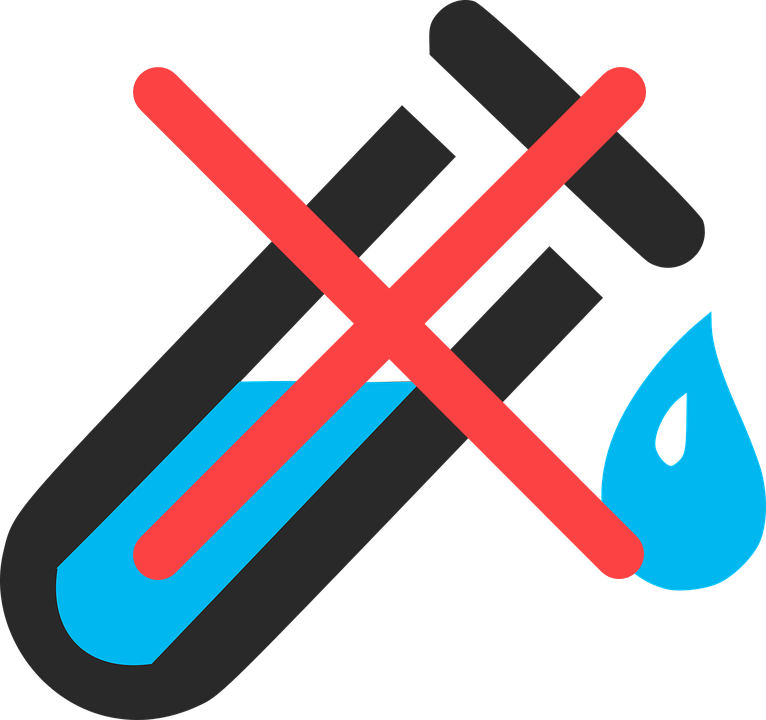
Symbol
Elastic Length
Resiliency Length
Liveliness
Notes
Remove
abs XY
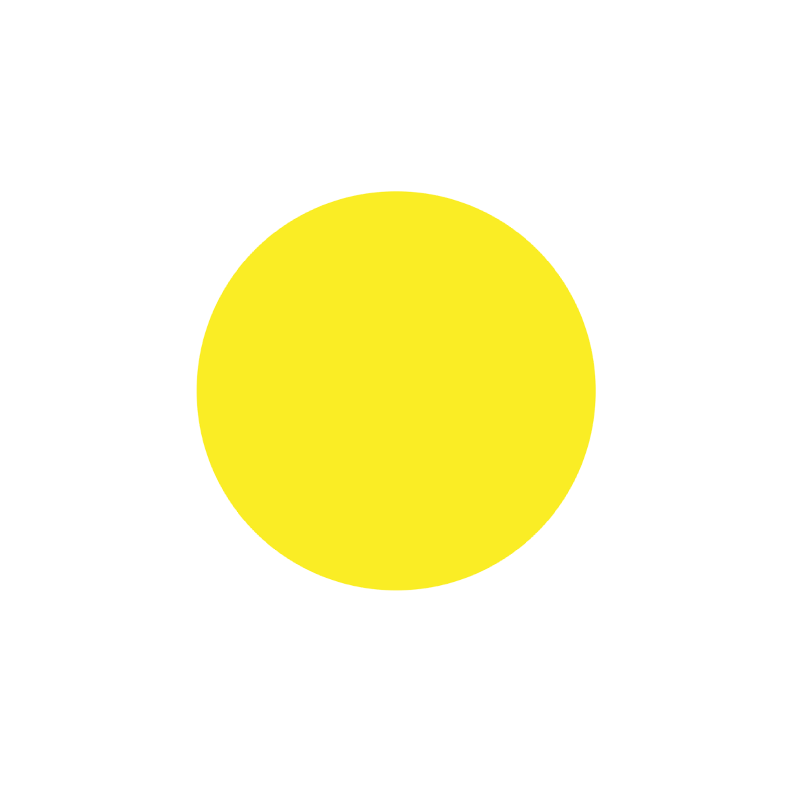
The Liveliness Index
Today’s handspinner is acutely aware of integral qualities of fibre which allow
them to describe and ultimately predict the behaviour of their finished yarns.
Terms such as angle of twist (AOT), twists per inch (TPI), and wraps per inch (WPI)
are common attributes that appear in many of the trade journals available today.
PLY and SpinOff being two of the most popular. Each of these can be discretely
measured by the handspinner and used in explicative terms to describe the yarn
itself, and in comparative terms when comparing disparate yarns or yarns of the
same fibre, but spun at different 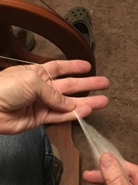 times as part of a larger project. Angle of twist (AOT)
refers to the angle at which the plies appear relative to the axial length of
sample yarn. In general, the greater the angle, the less soft the yarn will be, or
more dense and hard. Twists per inch (TPI) refers to the number of rotations of the
yarn (whether clockwise or counter clockwise) in a unit of measure, in this case,
one inch. The more TPI, the higher the AOT, and consequently, the less soft the
yarn will be . Wraps per inch (WPI) refers to the thickness or diameter of the yarn
as it is laid side by side within a unit of measure, in this case, again, one inch.
In general, the more WPI, the finer the yarn. Each of these can easily be measured
with simple tools by the handspinner.
Industry standards and studies, by contrast, offer limited usefulness in practice
to the handspinner. Where the chemical and "anatomical" structures of various
animal and plant fibres expand the knowledge and awareness of hanspinners, close
analysis and presentation of metrics such as tensile strength breaking point,
stress-strain curves, compression, tenacity, coefficient of friction lose their
real-world applications for production methods dominated by hand-manipulation.
Discoveries of new fibre properties and relationships benefit industry greatly in
very real way: faster more efficient production (from fibre prepation to end-use
fabric), reduction of waste, source fibres better suited to end-products, wider
range of fabric design possibilities, new synthetic fibres, for example. Concepts
of elasticity and resiliency, for example, are hidden within a wider range of fibre
strength characteristics and often are focused on the fibre itself rather than the
yarn. According to MG Huson, yarn can and is measured for strength, but 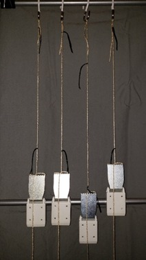 because the strength of the yarn relies on
friction introduced by twist and dynamics beyond the length of individual fibres,
it is left ‘out of scope’ (Hunson, 2009). By contrast, the yarn itself is of
primary importance to the craftsman. Fibre characteristics play a secondary role
and only insofar as they assert discernible differences in the final yarn.
The perceptive capabilities for the craftsman, however, are limited to the five
senses and whatever tools can be procured by relatively modest range of financial
resources: rulers, scales, magnifying lenses, etc. Hence, other descriptive terms
are not as easily ascertained, require more sophisticated equipment to quantify, or
are not usually measured by the handspinner. These are, nonetheless, part of the
preferred vocabulary for describing yarn. Terms such as crimp, bounce, memory, and
softness, are not measurable as such, but can be derived directly from the above
measurements, such as AOT, or as some sort of relationship between one or more
measurable qualities, such as TPI and WPI to determine relative number of twists
for a given diameter of yarn. The fewer the WPI and thicker the yarn, the softer it
will be. Crimp, however, is a result of specialized mechanisms produced in the
fleece and lock structure of fleece itself. The spring like wave is measured in the
lock of the fleece before it is processed into a fiber but 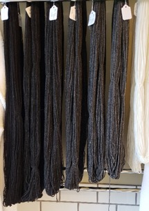 preparation. Crimp can be measured relatively
easily as the number of waves per unit measure (usually one inch). However, the
effect of fleece CPI in the final yarn-whether a greater number or lesser number-is
not as easily quantifiable and is more general in nature. For example, Beth Smith
explains that sheep breeds with a “wonderful crimp structure [in their wool], have
a natural elasticity and memory built into them” (Smith, 2013). The implication
being that the more crimps per inch, the more elastic and more memory the resulting
yarn will have. Whereas the relationship between crimp, elasticity and memory (or
resiliency) could be made more clear if the handspinner were to measure the crimp
of a specific fleece and subsequently measure the elasticity and memory of the
yarn, in the case of blended and carded preparations, the crimp of constituent wool
or the absence of wool altogether obscures the relationship and leaves only
elasticity and resiliency (or memory) as observable characteristics. Crimp, then,
is generally inadequate for quantifying elasticity vis-à-vis resiliency in
describing handspun yarns especially when the source fiber has been processed
and/or blended with other source fibres either commercially or by the handspinner
themself.
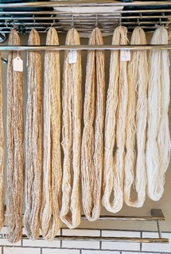It is this relationship
between elasticity (the amount that the yarn will stretch) and resiliency (the
tendency of the yarn to return to its original state after undergoing stress) that
is the focus of the study here. Further, the study attempts to quantify the
relationship in providing a metric with which to describe handspun yarn much like
AOT, TPI, and WPI: liveliness. Descriptors do well to impart an immediate
impression and evaluation of a yarn, a resume‘ of its potential, so to speak. While
liveliness moves beyond the skein itself and provides the handpsinner, handknitter,
handweaver with a more concrete indicator of the success of the yarn in the chosen
final project where liveliness is a critical component.


 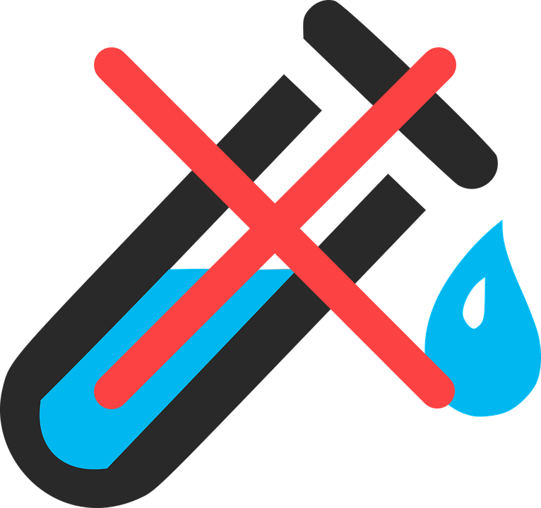
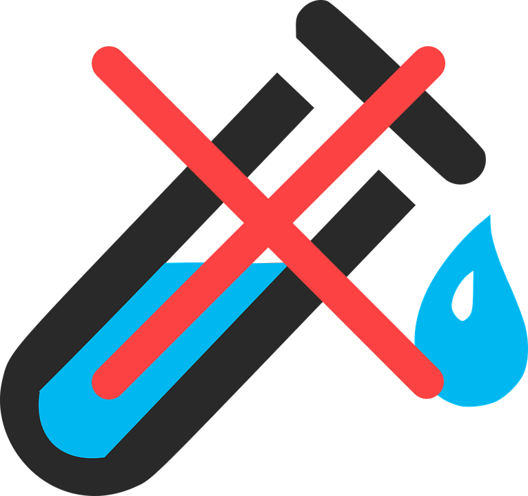